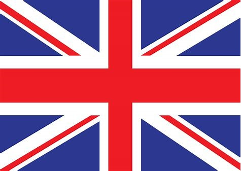
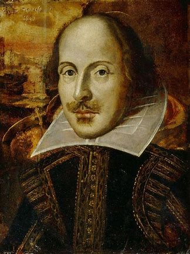
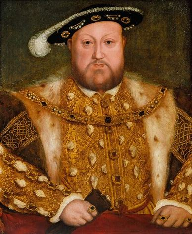
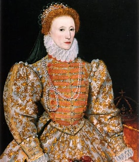
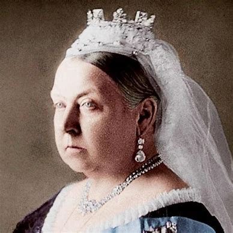

 Life in Britain
If you live in Britain, the history of Britain should interest you. Here are a few important figures in the history of England.
William Shakespeare

- William Shakespeare was born in the town of Stratford-upon-Avon in 1564.
- His father John had a successful job as a glove maker.
- Historic events happened during his life, including the Gunpowder Plot.
- He married Anne Hathaway when he was eighteen.
- Shakespeare's plays sometimes had magic, witches and strange, far-off places. This was new and exciting for the time.
- One of Shakespeare’s most famous plays is Macbeth, which includes witches and a plot to kill the king.
- Shakespeare wrote famous poetry as well as plays.
Henry VIII

- Henry VIII was King of England in the 16th century.
- Henry wanted to look rich and strong. He had jewels sewn into his clothes and ate the finest foods.
- He had six wives. Two of them were beheaded!
- He started the Church of England.
- Henry VIII became king when he was eighteen years old.
- Henry VIII wanted a son to be king when he died. Henry's first wife, Catherine of Aragon, only had a daughter. Henry wanted to divorce her but the Pope didn't allow it.
- Henry started the Church of England. He was head of the new Church and he could do what he liked. He divorced Catherine and married Anne Boleyn.
- Henry married so many times because he was desperate to have a son.
Queen Elizabeth I

- She was Queen of England, Ireland and Wales from 1558-1603.
- It was unusual to be ruled by a woman at that time.
- Her reign was called the Golden Age.
- Queen Elizabeth I’s time in power is known as the ‘Elizabethan Age’.
- She ruled England alone. She did not marry. And although she was queen, England had no king.
- Some people felt only men should be rulers. Elizabeth proved them wrong.
- While she was queen, England won a famous sea battle against the Spanish Armada.
Queen Victoria

- She was Queen of the United Kingdom of Great Britain and Ireland for 63 years.
- Queen Victoria married Prince Albert from Germany.
- The queen's reign is known as the Victorian age.
- Queen Victoria was only 18 when she became Queen.
- At the start of Queen Victoria’s reign, many children had to work. By the time the queen died, more children were able to go to school.
- When Victoria became Queen in 1837, most people travelled by horse or on foot. The Railway Age began during the queen's reign.
- Prince Albert died when he was 42. Queen Victoria was extremely upset. The queen was so sad that she dressed in black clothes for the rest of her life.